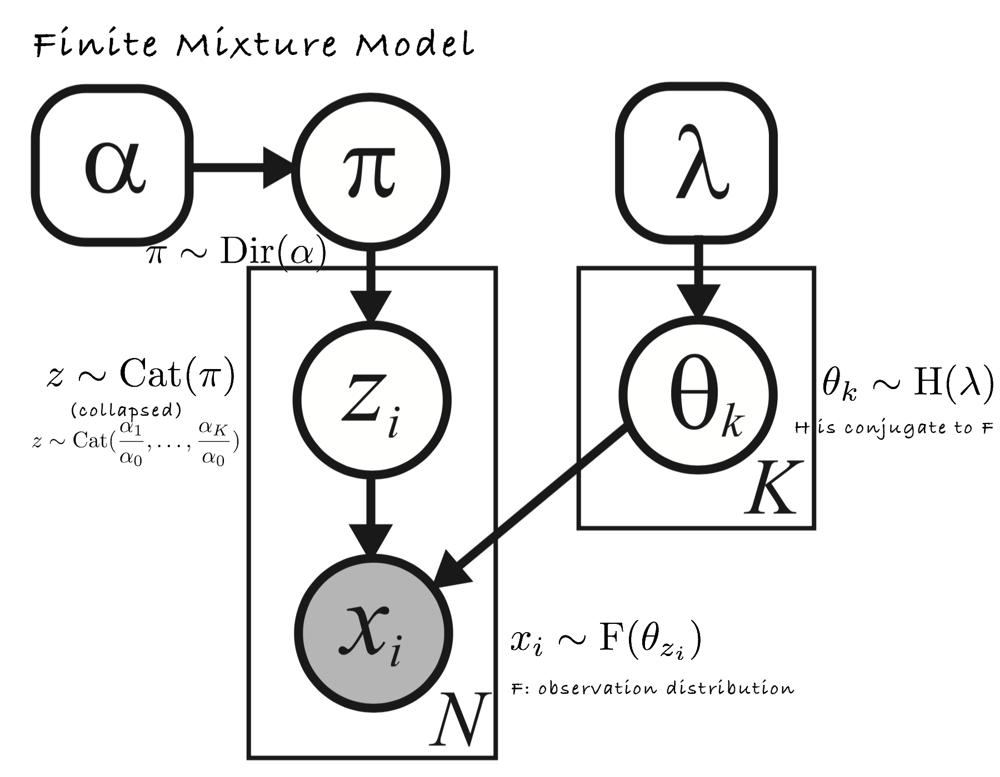
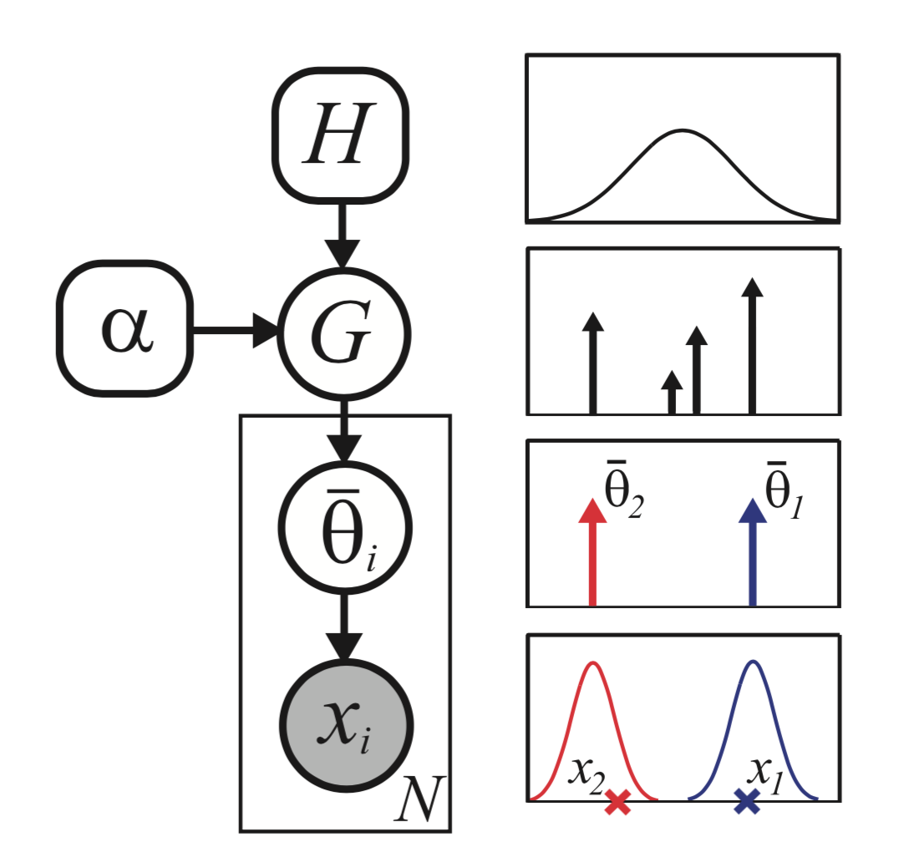
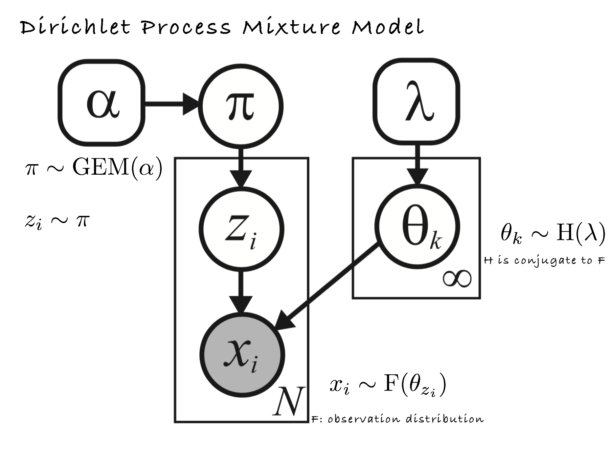
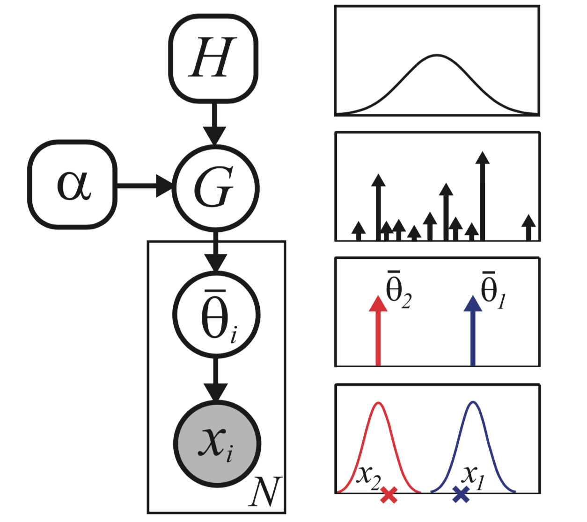

Start from finite mixture model...
Traditional representation:

Another representation (in which H and F are both Gaussian):

where parameters are sample from G, a
discrete measure of
H:
G(θ)=∑k=1Kπkδθk(θ)
and
xi∼F(θ¯i).
DPMM

π∼GEM(α) is the stick-breaking construction:
βkπk=Beta(1,α)=βk(1−∑l=1k−1πl)
Another representation:

Where
G is a random measure
G∼DP(α,H):
G(θ)=∑k=1∞πkδθk(θ)
One can show that the GEM process will terminate with probability 1, which means samples from a DP are discrete with probability 1. As
N→∞,
K→αlog(N), showing that the model complexity will indeed grow logarithmically with dataset size.
model fitting (Gibbs sampling)
p(zi=k|z−i,x,α,λ)∝p(zi=k|z−i,α) p(xi|x−i,k,λ)
p(zi=k|z−i,α)={Nk,−iα+N−1αα+N−1if k has been seen beforeif k is a new cluster
p(xi|x−i,k,λ)=p(xi,x−i,k|λ)p(x−i,k|λ)
where
p(xi,x−i,k|λ) is the marginal likelihood of all the data assigned to cluster
k, including
i, and
p(x−i,k|λ) is an analogous expression excluding
i.
Example: DPMM algorithm for clustering:
Random initial assignment to clusters
loop
unassign an observation
choose new cluster for that observation
until convergence
Gibbs sampling for choosing cluster:
p(zi=k∣∣z−i,x,α)=⎧⎩⎨⎪⎪(NkN+α)(x,Nkx¯Nk+1,1)αN+α(x,0,1)existing cluster knew cluster
on the assumption that base distribution G is normal distribution with zero mean and unit variance.
(x,μ,Σ) is the probability of generate
x from a Gaussian with mean
μ and variance
Σ.
Reference
"Machine Learning" Lecture 17: http://www.umiacs.umd.edu/~jbg/teaching/CSCI_5622/
Book: Machine Learning - A Probabilistic Perspective(Chapter 25)